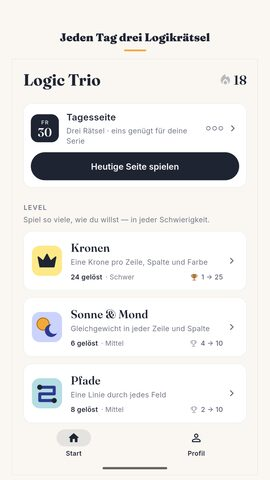
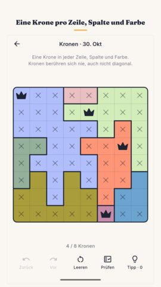
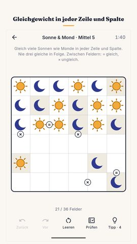
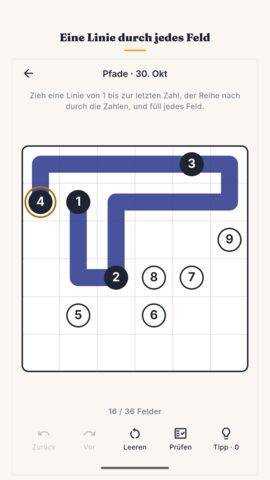
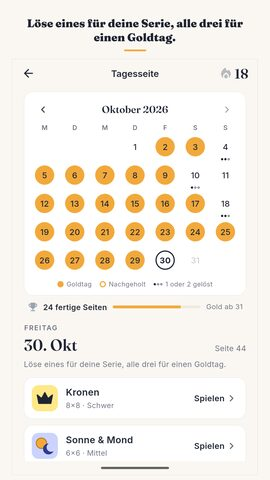
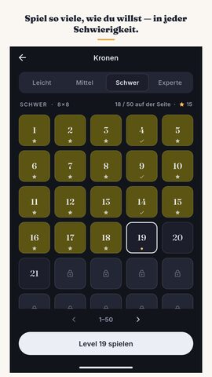
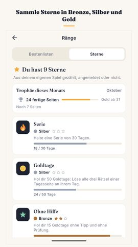
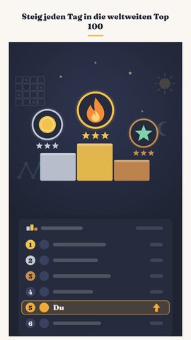

Logic Trio Pressemappe
Alles, was du brauchst, um über das Spiel zu schreiben oder es in einem Video zu zeigen. Frei verwendbar.
Logic Trio: Tägliche Rätsel
Logikrätsel täglich: Kronen, Sonne & Mond, Pfade. Genau eine Lösung. Offline.
Videos
Screenshots
















Icon und Banner

Über das Spiel
Jeden Tag erscheint eine neue Seite mit drei Logikrätseln, weltweit für alle dieselbe. Kronen, Sonne & Mond, Pfade: jedes davon hat genau eine Lösung, und bei Kronen und bei Sonne & Mond musst du nie raten. Löse eines für deine Serie, alle drei für einen Goldtag.
Die Tagesseite
Die Seite wechselt um Mitternacht auf deinem eigenen Handy. Tag eins war der 17. September 2026, und jede Seite seitdem steht noch im Monatskalender: Einen verpassten Tag kannst du nachholen. Ein gelöstes Rätsel hält deine Serie am Leben — die Hürde ist mit Absicht niedrig: Ein hektischer Tag soll dich keine Serie kosten, die du wochenlang aufgebaut hast. Löst du alle drei, wird der Tag zum Goldtag. Zehn Goldtage im Monat bringen Bronze, zwanzig Silber, ein ganzer Monat Gold. Joker decken die Tage ab, an denen das Leben dazwischenkommt. Ist die Seite geschafft, gibt es eine kurze Ergebniskarte ohne Spoiler, die du weiterschicken kannst.
Die drei Spiele
Kronen: Setz eine Krone in jede Zeile, jede Spalte und jede Farbe, und lass nie zwei Kronen einander berühren, auch nicht diagonal. Das ist ein Star Battle.
Sonne & Mond: Füll das Gitter so, dass jede Zeile und jede Spalte gleich viele Sonnen wie Monde hat und nie drei gleiche nebeneinander stehen. Das ist ein Binär-Puzzle.
Pfade: Zieh eine durchgehende Linie von der ersten Zahl bis zur letzten, der Reihe nach durch die Zahlen, und füll dabei jedes Feld. Das ist ein Number Path.
Rätsel, die nie ausgehen
Neben der Tagesseite hat jedes der drei Spiele eigene, durchnummerierte Logikrätsel in vier Schwierigkeitsgraden: Leicht, Mittel, Schwer und Experte. Alle vier sind von der ersten Minute an offen. Jedes Spiel enthält 1.200 doppelt geprüfte Level, 3.600 über alle drei zusammen, und am Ende des Pakets baut dein Handy leise neue dazu, solange du spielst. Jedes mitgelieferte Rätsel wurde zweimal gelöst, auf zwei verschiedenen Wegen — genau eine Lösung ist hier eine geprüfte Tatsache, kein Versprechen.
Hilfe, die erklärt
Zurück und Vor sind unbegrenzt. Prüfen ist gratis und unbegrenzt und sagt dir, wie du stehst, ohne dir das Brett zu verraten. Auch ein Tipp setzt die Antwort nicht einfach ein: Er zeigt dir, wo du hinschauen sollst, und sagt bei Kronen und bei Sonne & Mond in einem Satz, warum dieses Feld sein muss, was es ist — damit dir das nächste Rätsel etwas leichter fällt als das letzte. Liegt schon ein Fehler auf dem Brett, zeigt der Tipp zuerst auf den Fehler.
Nichts läuft gegen dich
Keine Leben, keine Energie, keine Züge, die ausgehen, und keine Uhr im Nacken. Die Stoppuhr zählt aufwärts, sie ist für deine eigenen Bestzeiten da, und du kannst sie ausschalten. Kein Konto nötig. Mit der freiwilligen Anmeldung bei Google Play Games nimmst du deinen Fortschritt auf andere Handys mit und bekommst Erfolge und weltweite Bestenlisten. Deine Zeiten, deine beste Serie und deine gelösten Rätsel stehen auf einer Seite. Das ganze Spiel läuft offline, ohne jede Internetverbindung.
Zum Lesen gemacht
Deutsch, Englisch, Hindi, Portugiesisch, Spanisch, Indonesisch und Französisch. Ein helles Design und ein dunkles. Muster in den farbigen Regionen für Farbenblinde, damit das Brett auch in Schwarzweiß funktioniert. Eine optionale tägliche Erinnerung, aus, bis du sie einschaltest. Download unter 25 MB.
Gratis, mit Werbung
Logic Trio ist ein kostenloses Logikrätsel-Spiel, finanziert durch Werbung. Keine Werbung unterbricht je ein Rätsel, keine erscheint beim Öffnen des Spiels, keine kommt zwischen die drei Rätsel des Tages. Die Rätsel selbst laufen offline, nur die Werbung braucht eine Verbindung. Die letzte Woche im Kalender ist immer offen, und ein kurzes, freiwilliges Video kann eine ältere Seite dauerhaft öffnen, deine Tipps auffüllen oder eine gerissene Serie retten. Nichts davon ist nötig, um weiterzuspielen.
Von Nimbleknot.
Fragen und Fehlerberichte: nimbleknot.games@gmail.com
Datenschutzerklärung und Nutzungsbedingungen: https://nimbleknot.github.io/logictrio/
Ich bin kein Programmierer, deshalb hat mir KI beim Code geholfen. — Ritesh, Nimbleknot